Overview › Architecture
Architecture
Fourteen bounded domains, each with one documented authority, one narrative verb or infrastructure preposition, and an explicit list of decisions it is forbidden to make.
This page is a digest. The canonical text is
02-constitution.md
(naming constitution and the 45 invariants) and
04-architecture.md
(system context, planes, control hierarchy), published in full at
/design/ and versioned in
the repository.
Actors have verbs. Infrastructure has prepositions.#
The locked convention distinguishes agents from infrastructure. People and entities represent agents: they observe, plan, commission, act, design, conform, compile, test, judge, embody, destroy, or reveal. Places, systems and phenomena represent infrastructure: they are the contexts under, in, or from which agents operate.
“Infrastructure” does not mean passive. It means the component provides a neutral capability rather than exercising a preference about what ought to happen.
| Domain | Grammatical use | Neutral service | Must not own |
|---|---|---|---|
| Leyline | under / through Leyline | Contracts, schemas, grammar profiles, versions, invariants, policy record formats, and the deterministic request resolver | Case-specific decisions or subsystem policy |
| Tolaria | trained / executed / tested in Tolaria | Host training, data and optimiser execution, devices, snapshots, replay, branching and rollback | Preferences, utility weights or verdicts |
| Urborg | recorded in / retrieved from Urborg | History, lineage, bootstrap ancestry, counterfactual outcomes, retrieval and datasets | Live-host mutation or self-approval |
| Agent | Verb | Architectural authority | Must not become |
|---|---|---|---|
| Ugin | Plans | Strategic allocation, regional permissions, long-horizon budgets and risk | A local action selector |
| Aurelia | Commissions and acts | Tactical intervention timing, insertion-region choice, operational constraints, pre-commit lifecycle control | A co-designer or source of unallocated authority |
| Nissa | Observes and reports | Typed host diagnostics, direct evidence publication, and provenance | A hidden controller or editorial intermediary |
| Momir | Designs | Candidate topology, parameters, mutation and recombination | The approver of its own work |
| Elesh | Conforms | Structural legality, canonicalisation and semantic identity | A utility predictor or task judge |
| Urabrask | Compiles | Lowering and executable realisation | A semantic graph designer |
| Jin-Gitaxias | Tests | Dynamic QA, regression, runtime conformance and evidence certification | The admission judge |
| Isperia | Judges | Admission, no-op comparison, policy utility and continued-tenancy rulings | A test runner or compiler |
| Wrenn | Embodies | Host topology, slots, maturation, blending and physical lifecycle | A candidate selector or blueprint catalogue |
| Emrakul | Destroys | Safe post-commit sedation, decay, consolidation and lysis | A constructor or newborn judge |
| Tamiyo | Reveals | Flight recording, projections, operator surfaces and audit | A control-plane backchannel |
Nissa observes and reports. Ugin plans. Aurelia commissions and acts. Momir designs. Elesh conforms. Urabrask compiles. Jin-Gitaxias tests the compiled result in Tolaria. Isperia judges the resulting evidence under Leyline. Wrenn embodies the admitted growth. Emrakul destroys what no longer earns continued tenancy. Urborg retains every precedent. Tamiyo reveals the account.
The canonical sentence — a compact authority map.02-constitution.md§ The canonical sentence
Architectural planes#
| Plane | Domains | Purpose |
|---|---|---|
| Constitutional infrastructure | Leyline | Contracts, grammar profiles, compatibility, policy records, invariants |
| Training and execution | Tolaria | Trains the live host; executes deterministic ordinary, replay and branch worlds |
| Historical infrastructure | Urborg | Lineages, reference ancestry, outcomes, failures and split-safe datasets |
| Strategic agency | Ugin | Allocates regional resources, permissions and risk over long horizons |
| Tactical commissioning | Aurelia | Decides whether and where to commission growth; manages pre-commit actions |
| Observation | Nissa | Publishes what the host is doing without prescribing what should be built |
| Synthesis | Momir, Elesh, Urabrask | Designs, canonicalises and compiles growth |
| Assurance and adjudication | Jin-Gitaxias, Isperia | Establishes empirical evidence, then judges it independently |
| Embodiment and maintenance | Wrenn, Emrakul | Introduces growth safely; removes obsolete committed structure |
| Witness | Tamiyo | Exposes an auditable account without steering it |
The evidence-routing rule#
One routing rule is load-bearing enough to state on its own. Nissa publishes one canonical observation identity independently to Aurelia and Momir (INV-07). Aurelia commissions work from that evidence but is never the channel through which the designer receives it (INV-09):
Nissa sends the evidence directly to Momir. Aurelia sends only the assignment brief. Momir never receives reality through Aurelia’s caption.
That rule turns into a concrete code-review question: does this field specify the assignment, or does it smuggle a conclusion? Scope, region, resource class, deadline, maturity mode and assurance class are assignment fields. A deficit diagnosis, topology preference, ancestor choice, expected mechanism or proposed solution does the designer’s job for it, and is schema-invalid in Aurelia’s channel.
Enforcement is contractual, never metaphorical:
direct evidence publication, a narrow GrowthIntent,
deterministic request resolution, immutable provenance, and tests that
reject diagnostic or structural hints in Aurelia’s channel. And if the
codenames aren’t carrying the authority model for you, the design docs
retell it, desk by desk, as a newsroom —
the newsroom
rendering — same separations, no new vocabulary.
The loops#
Observation and commissioning#

GrowthIntent never carries a copy of
telemetry.
Assurance and adjudication#

Control hierarchy#
Ugin
└── establishes StrategicEnvelope
└── Aurelia chooses local actions
├── WAIT
├── COMMISSION_GROWTH → GrowthIntent
├── BEGIN_MATURATION
├── REQUEST_QA
├── REQUEST_ADJUDICATION
├── BEGIN_BLEND
├── HOLD
├── ABORT
└── COMMIT
After COMMIT:
Aurelia relinquishes ordinary ownership
└── Emrakul manages physical maintenance
├── REQUEST_REVIEW
├── HOLD
├── SEDATE
├── DECAY
└── LYSEThe sentence test#
Because each domain owns a verb, the narrative grammar doubles as a cheap architecture lint. A sentence that sounds wrong usually describes a real responsibility leak.
Healthy
Nissa published the same TelemetryEnvelope
to Aurelia and Momir.
Aurelia issued a GrowthIntent for Region A
under Ugin's envelope.
Jin-Gitaxias requested a deterministic trial
in Tolaria.
Isperia selected no-op from the certified
evidence.
Wrenn rejected a lifecycle command whose
Isperia warrant was invalid.
Tamiyo displayed the rejection without
altering the run.Triggers review
Aurelia forwarded a captioned telemetry
summary to Momir.
Aurelia requested an attention-like topology.
Nissa recommended a wide bottleneck.
Tolaria rejected the candidate.
Jin-Gitaxias issued the admission token.
Isperia reran the branch with a more
favourable batch.
Urabrask inserted a new semantic node
during optimisation.
Tamiyo changed the learning rate directly.
The full catalogue of smells — observation to likely cause — is in
03-principles.md
§ Appendix A. The sentence test
is not a proof; it is an intentionally cheap first filter, backed by Leyline
contracts and authority tests that do the real enforcement.
Dependency direction#
The naming grammar implies two rules. Agents may consume neutral services from Leyline, Tolaria and Urborg through typed interfaces. Infrastructure must not import agent policy or encode agent-specific preferences.
| From | To | Verdict |
|---|---|---|
| jin_gitaxias | tolaria protocol | Healthy |
| isperia | leyline contracts | Healthy |
| momir | urborg retrieval API | Healthy |
| nissa | leyline telemetry schema | Healthy |
| aurelia | leyline GrowthIntent schema | Healthy |
| tolaria | isperia policy | Suspect |
| urborg | momir training code | Suspect |
| leyline | aurelia implementation | Prohibited |
| aurelia | momir graph grammar implementation | Prohibited |
| momir | aurelia hidden state | Prohibited |
Namespec 2.0 is locked (ADR-0008). Changing a codename or moving an authority between names requires an architecture decision record, because it changes package paths, telemetry names, tests, and the shared responsibility grammar.